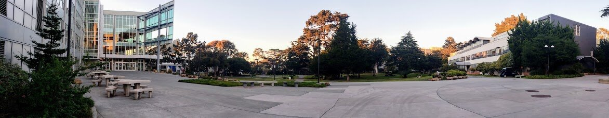

Adrian De La Rosa

About Me
Greetings,
I am a 25 year old college graduate from San Francisco State University
currently residing in both LA and the Bay Area. SFSU is where I studied
for a B.A. in Classics that I completed in December 2023. Prior to my
switch to studying the arts, I studied Computer Science at SF State for
a number of years on and off, from late 2016 up until mid 2022, completing
classes such as Intro to Operating Systems (CSC410), Unix Systems and
Web Development (CSC 317), and Programming Methodology (CSC340).
Projects that I've completed range from virtual
file systems, to SQL schemas for production servers, and incoming data drops.
Before my interest in the technical side of programming, I also displayed
an aptitude for networking and server management. The longest tenured
project of mine was archival work for a university that I began in late 2017
and saw until project's end in May 2023.
I am open to any and all inquiries at adelaro2@mail(dot)sfsu(dot)edu